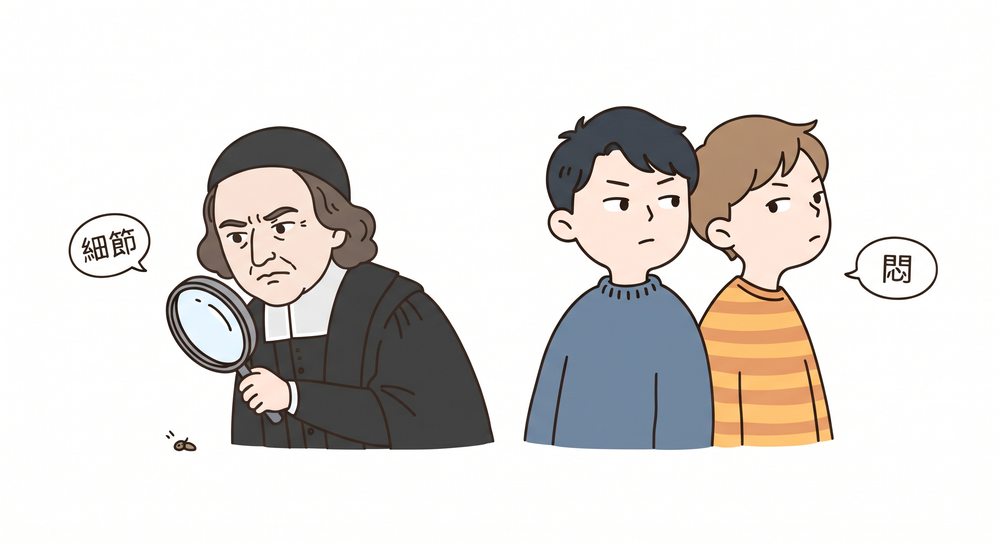

約翰一書查經
1 JOHN 2:1–2
經文
約翰一書 2:1-2
1我小子們哪，我將這些話寫給你們，是要叫你們不犯罪。若有人犯罪，在父那裏我們有一位中保，就是那義者耶穌基督。
2他為我們的罪作了挽回祭，不是單為我們的罪，也是為普天下人的罪。
問題
他為我們的罪作了挽回祭，不是單為我們的罪，也是為普天下人的罪。
主為普天下人的罪作了挽回祭，為何仍有人下地獄？
各點淺評
- 普救論（Universalism）
- 明顯和聖經矛盾 ——「惟有膽怯的、不信的、可憎的、殺人的、淫亂的、行邪術的、拜偶像的，和一切說謊話的，他們的分就在燒着硫磺的火湖裏；這是第二次的死。」（啟示錄 21:8）
- 天主教、現代福音派
- 普遍、容易理解的睇法，著重人人都有機會領受救恩
- 改教家、清教徒
- 福音本身只給猶太人，到給外邦人，強調神計劃的演進
這個題目重要嗎，值得用一堂去講？
1. 不是一個簡單的問題
- 歷史上不同宗派有不同看法
- 影響我們如何看神的屬性
2. 個人見證
- 我自己信主一定年日之後，才接受改教家／清教徒看法
- 初時情感上不接受：「神不應該救所有的人嗎？」
- 不得不接受改教家的看法後，一段時間才明白它的價值
- 後來明白這是更「純粹」的福音：確保人必定因信得救，不只是為得救提供「可能性」

清教徒約翰歐文 (John Owen) 的觀點 The Death of Death in the Death of Christ
歐文認為，關於基督救贖（十字架代贖）的範圍與對象，在邏輯上只有以下三種可能：
- 如果唔駛落地獄，就等同普救論
- 如果落地獄，就有雙重刑罰：如果你亂拋垃圾，有人幫你畀咗 3000 蚊嘅罰款，你仲使唔使俾錢？
- 邏輯上最合理，前後一致
- 應對其他經文：「我為他們祈求，不為世人祈求，卻為你所賜給我的人祈求，因他們本是你的。」（約翰福音 17:9）
- 若基督為所有人死，卻不為全人類代求，這存在矛盾
- 剩低嘅罪點算？
- 冇人可以得救
基督為全人類的所有罪而死，但人因不信而下地獄
那人為什麼會因為「不信」而下地獄（約 3:18, 16:9）？
→ 與聖經直接矛盾！
那麼請問：基督在十字架上有沒有為人們「不信的罪」作挽回祭？
既然基督已經為他們的「不信之罪」付清了代價、平息了神的怒氣，為什麼他們還會因為「不信」而下地獄？
那就證明基督在十字架上並沒有為所有人的一切罪作挽回祭！
福音派的觀點 - 吳主光 / 戴夫亨特 (Dave Hunt)
1. 「溺水者」的比喻與人的責任
亨特常用「溺水者」作比喻：救生員已經付上代價游到溺水者身邊伸出援手，但溺水者仍須放棄掙扎、接受救援。同樣地，基督在十字架上為全人類付清了罪債，但這份赦免必須透過人的「接受（信靠）」才能生效。人若拒絕這份禮物而滅亡，責任完全在於人自己，並不代表基督沒有為他付代價，也不構成神「雙重追討」。
2. 聖經字面的清晰性
他認為，如果約翰福音 3:16 的「神愛世人」和約翰一書 2:2 的「為普天下人的罪作了挽回祭」都不能按字面理解，那麼一般信徒將無法直接讀懂聖經，必須依賴神學菁英的「密碼翻譯」才能明白福音。
3. 福音呼召的真誠性
聖經明言神「願意萬人得救」（提前 2:4），並親自勸勉罪人「你們來，我們彼此辯論」（賽 1:18）。如果神在永恆中早已決定不拯救某些人，基督也根本沒有為他們流血，那麼神在福音書中對眾人發出的悔改呼召與哀哭，就會變成一場缺乏誠意的「假象／演戲（charade）」。
兩派對比
雙方都反對「普救論」，共同承認聖經既有十字架救贖的宣告，也明確指出最終有人滅亡。
約翰·歐文（特定救贖派）
Dave Hunt ＆ 吳主光（普世代贖派）
會影響我們傳福音嗎？
1. 福音的呼召仍然一樣
信主就得永生，不信就會滅亡。
司布真：「神沒有在選民背上畫記號，所以我們要向所有人傳福音。」
2. 不阻礙傳福音；相反，我可以真誠相信祈禱、盼望神改變人心
- a. 我不相信：神想救全人類，卻限制自己的自由讓人自由揀選
- b. 神的救恩實在施行：神會在人心靈裡生發「羨慕」的心
- c. 若果人掌握最後的決定權，為什麼要祈禱呢，去求人不是更加直接嗎？
- 人會揀錯，但神唔會出錯，神的計劃必定成功（不代表可以隨便犯罪、也不代表沒有艱難）
- 還是，人會揀錯，並可能會打亂神的全盤計劃？
回顧：Dave Hunt 的文氏圖
代贖涵蓋全人類，救恩藉信心領受。
回顧：約翰歐文的文氏圖
代贖範圍、聖靈賜信心與得救者三層重合。
應用
1我小子們哪，我將這些話寫給你們，是要叫你們不犯罪。若有人犯罪，在父那裏我們有一位中保，就是那義者耶穌基督。
2他為我們的罪作了挽回祭，不是單為我們的罪，也是為普天下人的罪。
「不犯罪」難嗎，聽完一整堂之後，有沒有想到什麼方法可以達成？
- 並沒有產生一個高深／新奇的方法，讓人不犯罪
- 努力活出聖潔生活，若犯罪就要悔改，恢復和神的關係（好像本來就知道？）
- 對神的工作更加有信心